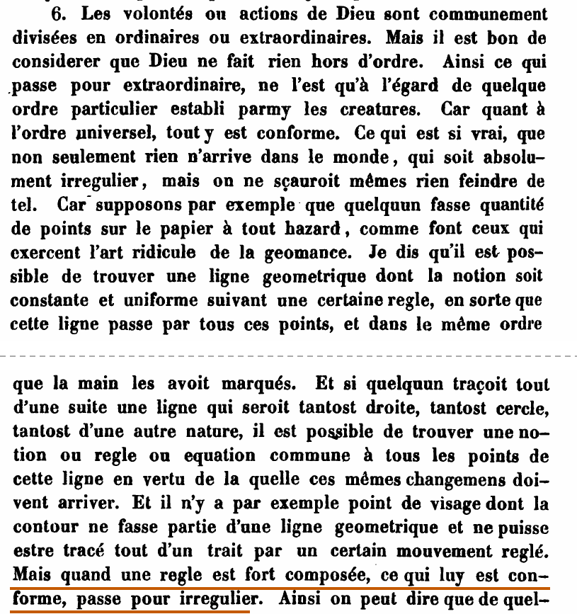
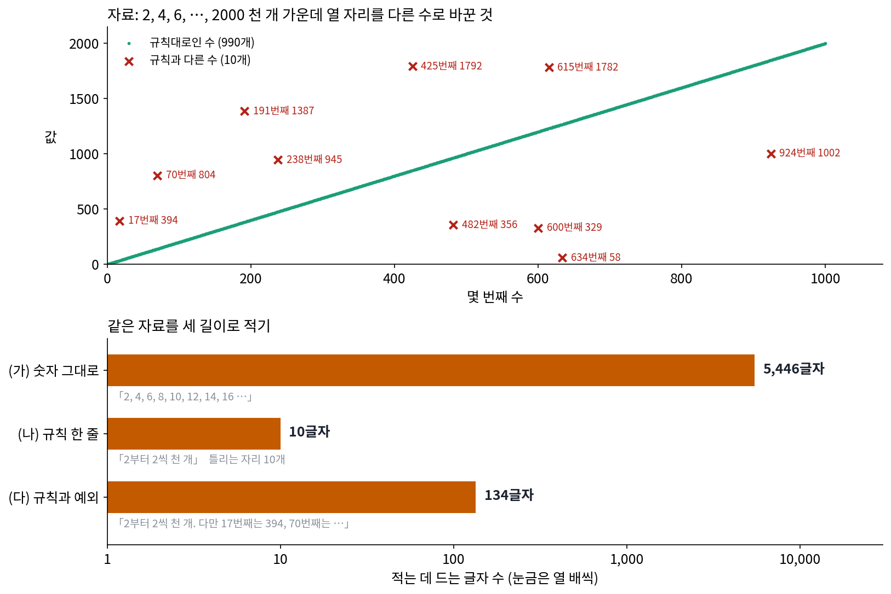

머리말: 압축은 이해인가
전화로 수열 불러 주기
친구가 전화로 2, 4, 6, 8, 10, …으로 이어져 2000에서 끝나는 수 천 개를 받아 적어 달라고 한다. 천 개를 하나씩 불러 주려면 「이, 사, 육, 팔, 십, 십이, …」를 한참 읊어야 한다. 쉼표와 빈칸까지 넣어 글로 적으면 5,446글자인데, 대부분의 사람은 그렇게 하지 않고 「2부터 2씩 천 개」라고 열 글자로 말한다. 받아 적는 친구는 이 열 글자만 듣고 5,446글자를 하나도 틀리지 않고 되살린다.
부르는 사람이 수열의 규칙을 알았기 때문에 열 글자로 충분했고, 규칙을 모르는 사람이었다면 천 개를 다 불러야 했을 것이다. 규칙을 아는 사람은 한 줄이면 되는데, 그렇다면 거꾸로 어떤 자료를 짧게 적을 수 있는 사람은 그 자료를 이해한 사람이라고 말해도 될까? 이 책은 「짧게 적을 수 있으면 이해한 것인가」라는 물음을 끝까지 들고 간다.
역사: 아무렇게나 찍은 점을 지나는 선
「짧게 적을 수 있다」와 「규칙이 있다」를 묶어 생각한 오래된 기록이 있다. 라이프니츠(Gottfried Wilhelm Leibniz)는 1686년에 쓴 『형이상학 논고(Discours de métaphysique)』 6절에서 이런 실험을 상상했다. 누군가 종이에 점을 아무렇게나 잔뜩 찍더라도, 그 점들을 손이 찍은 순서대로 모두 지나가는 선, 하나의 일정한 규칙을 따르는 기하학의 선을 언제나 찾을 수 있다. 그렇다면 세상에 규칙 없는 것은 없는 셈일까? 라이프니츠는 정도의 문제라고 답했는데, 규칙을 적는 식이 아주 복잡하면 점들이 그 규칙을 따르더라도 불규칙한 것으로 여겨진다는 것이다. 점마다 따로 맞춘 식은 점의 목록보다 짧지 않으니 규칙이라 부를 값어치가 없다. 이 원고는 라이프니츠가 살아 있는 동안에는 나오지 않았고, 1846년에야 독일에서 처음 출판되었다.

라이프니츠의 기준에는 빈 곳이 하나 있었다. 식이 「복잡하다」는 것을 무엇으로 재는가? 수학자 바일(Hermann Weyl)은 1932년 예일 대학 강연을 묶은 『열린 세계(The Open World)』에서 라이프니츠의 이 대목을 다시 꺼냈다. 그는 법칙이 얼마든지 복잡해도 된다면 법칙이라는 말 자체가 비어 버린다고 보았고, 동시에 식의 복잡함은 식을 적을 때 어떤 함수를 기본 재료로 써도 되느냐에 따라 달라진다고 짚었다. 이를테면 사인 함수를 기본 재료로 허락하면 사인 곡선은 짧은 식이고, 덧셈과 곱셈만 허락하면 끝없이 긴 식이 된다. 「짧다」는 말은 무엇으로 적느냐를 정해야 뜻이 생긴다. 「짧다」를 무엇으로 잴지에 답하려는 시도가 20세기 중반 정보 이론과 계산 이론에서 나왔고, 이 책은 「낮은 차원」「코드 길이」「최소 기술 길이」에서 그 답들을 차례로 본다.

점을 아무렇게나 찍어도 다 지나는 선이 있다는 건 지금 보면 당연하지 않아요? 점이 열 개면 9차 다항식 하나로 전부 지나가게 맞추면 되잖아요.

맞출 수는 있죠. 그 9차 다항식을 받아 적으려면 숫자가 몇 개 필요해요?

계수가 열 개니까… 아, 점 열 개의 좌표를 불러 주는 것과 숫자 개수가 같네요.
라이프니츠가 규칙이라 부를 값어치가 없다고 한 식이 그런 꼴이에요. 그런데 식이 점의 목록보다 짧은지 긴지를 1686년에는 셀 방법이 없었어요. 무엇을 한 글자로 칠지부터 정해져 있지 않았거든요.

사인을 한 글자로 쳐 주느냐에 따라 길이가 달라진다는 게 바일이 짚은 거죠? 1932년에는 그게 정해졌어요?
그때도 아직이었어요. 어떤 계산이든 적을 수 있는 공통의 기계는 1936년 튜링의 논문에서, 길이를 비트로 세는 법은 1948년 섀넌의 정보 이론에서 나와요. 바일은 빈 곳을 짚었지만 그 빈 곳을 채울 도구는 아직 없었어요.

그러면 「2부터 2씩 천 개」가 열 글자라는 것도 한글로 적기로 정했기 때문이네요. 그런데 규칙과 다른 자리가 몇 개 섞이면, 그 자료의 길이는 어떻게 세야 해요?
같은 자료를 세 길이로
전화 수열을 조금 바꿔서, 친구가 받아 적은 수열을 다시 보니 천 개 가운데 열 자리가 규칙과 다르다고 하자. 17번째 수는 34가 아니라 394이고, 70번째 수는 140이 아니라 804다. 어떤 자리가 어떤 값으로 바뀌었는지는 난수로 정했는데, 이렇게 바뀐 자료를 적는 방법은 적어도 세 가지다.
- (가) 숫자 그대로: 천 개를 쉼표로 이어 적는다. 5,446글자.
- (나) 규칙 한 줄: 「2부터 2씩 천 개」. 10글자. 그러나 이것만 보고 되살리면 열 자리가 틀린다.
- (다) 규칙과 예외: 「2부터 2씩 천 개. 다만 17번째는 394, 70번째는 804, …」처럼 규칙 뒤에 다른 자리 열 개를 붙인다. 134글자. 예외 하나에 평균 12.4글자가 들었다.

(가)와 (다)로는 받아 적는 친구가 원래 자료를 한 글자도 틀리지 않고 되살리는데, (다)는 (가)의 약 40분의 1 길이로 (가)와 똑같이 원래 자료를 되살린다. 이렇게 자료를 더 짧게 다시 적되 되살리면 원래와 똑같은 것을 무손실 압축 (되살리면 똑같은 압축, lossless compression)이라 한다. (나)는 더 짧지만 되살린 자료가 원래와 열 자리 다르다. 이렇게 조금 다르게 되살리는 대신 더 짧게 적는 것을 손실 압축 (조금 다르게 되살리는 압축, lossy compression)이라 한다. 사진 파일이 눈에 잘 띄지 않는 결을 버려 크기를 줄이는 것이 손실 압축이고, 문서 파일을 zip 으로 묶는 것이 무손실 압축이다.
어느 쪽이 「이해」에 가까울까? (나)는 열 자리를 잃었지만 자료를 만든 규칙을 정확히 담고 있어서, 열 자리가 받아 적다 생긴 실수라면 오히려 (나)가 원래 수열을 더 잘 되살린 것이다. 반대로 열 자리가 실수가 아니고 바뀐 열 수에만 있는 사정(그날만 바뀐 버스 번호 같은)이라면 (다)가 맞다. 같은 자료를 두고도 무엇을 남기고 무엇을 버릴지는 자료를 쓰는 목적이 정하기 때문에, 이 책은 「압축」이라는 말을 쓸 때마다 어느 쪽인지 밝힌다. 예측과 코드 길이를 다루는 「코드 길이」「최소 기술 길이」는 주로 무손실 압축을, 「레이트–디스토션과 정보 병목」처럼 「버려도 되는 것」을 다루는 장들은 손실 압축을 다룬다.
예외를 늘리면 그만큼 (다)가 길어져서, 다른 자리가 440개(천 자리의 44%)가 되면 (다)가 처음으로 (가)보다 길어진다. 그때부터는 규칙을 아는 것이 자료를 짧게 적는 데 도움이 되지 않고, 다른 자리가 천 개 모두이면 (다)는 12,350글자로 (가)의 두 배를 넘는다. 1부터 2000 사이에서 고르게 뽑은 수 천 개처럼 처음부터 규칙이 없는 자료라면 「2씩」이라는 규칙과 맞는 자리는 하나뿐이고, 규칙과 예외로 적으면 숫자 그대로의 2.26배가 된다. 규칙이 없는 자료에 규칙을 들이대면 짧아지기는커녕 길어진다.
압축 프로그램은 「2씩」을 모른다
그러면 컴퓨터의 압축 프로그램은 이 규칙을 찾아낼까? zip 파일과 PNG 그림 파일이 쓰는 압축 방식(DEFLATE)을 구현한 라이브러리 zlib 에 가장 센 단계로 (가)를 넣어 보았다. 예외 없는 수열 2, 4, …, 2000 은 5,446바이트(이 글은 숫자와 쉼표와 빈칸뿐이라 한 글자가 1바이트)가 2,020바이트, 원래의 37.1%가 되었다. 규칙 한 줄 「2부터 2씩 천 개」가 10글자였던 것에 비하면 거의 줄이지 못했다. 1부터 2000 사이에서 고르게 뽑은, 규칙이 없는 수 천 개를 넣으면 5,491바이트가 2,102바이트, 38.3%가 된다. 규칙이 있든 없든 거의 같은 비율이다. zlib 이 줄인 것은 「숫자 열 개와 쉼표, 빈칸만 나온다」는 사실, 그리고 같은 글자 조각이 되풀이된다는 사실이다. 「앞의 수에 2를 더한다」는 규칙은 zlib 이 찾는 규칙의 목록에 없다.
규칙이 있는데 압축 프로그램이 전혀 보지 못하는 더 극단적인 예도 있다. 원주율 π 의 앞 천 자리 3141592653…를 zlib 에 넣으면 1,000바이트가 503바이트가 된다. 이 503바이트도 거의 「숫자 열 개만 나온다」에서 온 것이다. 천 자리에 0부터 9까지가 고르게 섞여 있어서, 숫자마다 나온 비율만 알고 적어도 한 자리에 3.319비트, 천 자리에 415바이트가 든다. 그런데 π 의 천 자리를 내는 프로그램은 아래처럼 190글자로 적을 수 있다.
q,r,t,k,m,x=1,0,1,1,3,3
s=''
while len(s)<1000:
if 4*q+r-t<m*t:s+=str(m);q,r,m=10*q,10*(r-m*t),10*(3*q+r)//t-10*m
else:q,r,t,k,m,x=q*k,(2*q+r)*x,t*x,k+1,(q*(7*k+2)+r*x)//(t*x),x+2
print(s)
π 를 한 자리씩 끝없이 내는 기번스(Jeremy Gibbons)의 2006년 알고리즘을 짧게 옮긴 것이다. 이 프로그램이 낸 천 자리는 다른 공식(마친 공식)으로 따로 계산한 천 자리와 같다(sources/preface/s2_pi.py). 바일이 짚은 것처럼, 「짧다」는 무엇으로 적느냐에 달렸다. 파이썬 프로그램으로 적으면 π 천 자리는 190글자이고, zlib 의 방식으로 적으면 503바이트다. 압축 프로그램이 짧게 적지 못했다고 해서 자료에 규칙이 없다고 말할 수는 없다. 「압축을 잘한다」와 「규칙을 안다」 사이의 거리는 이 책의 「압축만으로 충분한가」가 다시 다룬다.
ML에서: 다음 토큰 맞히기와 짧게 적기
ML 을 공부한 사람에게 「짧게 적기」는 낯선 일 같지만 이미 매일 하고 있는 일이다. 언어 모델은 앞 글을 보고 다음 토큰이 무엇일지 확률을 내고, 학습 손실인 크로스 엔트로피는 정답 토큰에 모델이 매긴 확률의 로그에 마이너스를 붙여 평균한 것이다. 크로스 엔트로피는 그 모델을 써서 글을 적을 때 토큰 하나에 드는 평균 길이와 같은 양이다(로그의 밑을 2로 하면 단위가 비트). 다음 토큰을 잘 맞히는 모델일수록 같은 글을 더 짧게 적는다. 전화 수열에서 「2씩」을 아는 사람이 다음 수를 맞히고 그래서 짧게 불러 준 것과 같은 이야기다. 확률이 어떻게 실제 0과 1의 줄이 되는지, 그 줄의 길이를 어떻게 재는지는 「코드 길이: 예측기가 곧 압축기」에서 손으로 해 본다.
이 책의 물음: 짧게 적는 능력이 곧 이해인가
이 책은 저자가 던진 한 줄의 물음에서 시작했다.
“‘압축은 이해다’ 라는 관점은 어떤가? https://ma-lab-berkeley.github.io/deep-representation-learning-book/index.html 참고”
물음에 달린 주소는 UC 버클리의 마(Yi Ma) 연구실이 쓴 교재 『Principles and Practice of Deep Representation Learning』이다. 저자는 부캐넌(Sam Buchanan), 파이(Druv Pai), 왕(Peng Wang), 마 네 사람이다. 2025년 8월에 「Learning Deep Representations of Data Distributions」라는 제목으로 처음 공개되었다. 2026년 3월에 내용과 짜임을 크게 고친 판 2.0을 내면서 지금의 제목으로 바꾸고 「or a Mathematical Theory of Memory(또는 기억의 수학 이론)」라는 부제를 붙였다. 판 2.0은 2026년 6월 arXiv 에도 올라왔다(arXiv 2606.06624). 이 책에서는 줄여서 「참고서」라 부르는데, 참고서가 펴는 생각을 세 줄로 줄이면 이렇다.
- 좋은 표현은 자료를 짧게 적으면서 정보를 더 잘 정리한 표현이다. 세상의 자료에는 예측할 수 있는 규칙이 있어서 높은 차원의 공간에서 낮은 차원의 구조 위에 놓인다. 그 구조를 찾는 일이 압축이고, 좋은 표현은 그 구조를 정리해 코드 길이로 잰 정보 이득(information gain)을 키운다.
- 깊은 신경망의 층은 그 목표를 조금씩 좋게 하는 최적화의 한 스텝이다. ResNet, 트랜스포머 같은 신경망을, 코드 길이를 줄이거나 정보 이득을 늘리는 되풀이 알고리즘을 층으로 펼쳐 적은 것(언롤드 최적화)으로 읽는다.
- 학습은 그 최적화를 빠르게 만든다. 층을 계산만으로 지으면 수천 스텝, 다시 말해 층 수천 개가 들 수 있다. 층의 연산을 역전파로 학습시키면 적은 층으로 같은 목표에 다가간다.
세 줄 모두 이 책의 장에 들어 있다. 첫째 줄은 「낮은 차원」에서 「코딩 레이트와 코딩 레이트 감소」까지, 둘째와 셋째 줄은 「언롤드 최적화: 층은 최적화의 한 스텝」이 다룬다. 그런데 이 책이 참고서의 생각을 책의 결론으로 삼지 않고 여러 관점 가운데 하나로 소개하는 데에는 세 가지 이유가 있다.
첫째, 「짧게 적기 = 규칙 찾기」라는 생각은 참고서보다 훨씬 오래되었고 여러 가지로 뻗어 있다. 라이프니츠와 바일의 물음이 있었고, 섀넌의 정보 이론이 코드의 길이를 확률로 쟀다. 1960년대에는 「자료를 내는 가장 짧은 프로그램」으로 규칙을 재려는 시도가, 1970년대에는 「모델까지 적은 길이가 가장 짧은 모델을 고른다」는 원리가 나왔다. 2006년에는 위키백과 일부를 가장 작게 압축하는 사람에게 상금을 주는 대회가 「압축을 잘하는 것과 지능은 가깝다」는 생각에 상금을 걸었고, 2023년에는 큰 언어 모델을 그대로 압축기로 써 보는 실험이 나왔다. 참고서는 이 흐름 가운데 「신경망의 구조를 압축의 목표에서 끌어낸다」는 가지를 맡는다. 가지마다의 사람과 고민은 그 가지가 쓰이는 장의 역사 소절에서 하나씩 소개한다.
둘째, 이 관점에는 단단한 고리와 아직 약한 고리가 섞여 있다. 「다음 기호를 잘 맞히는 예측기는 그대로 압축기가 되고, 압축기는 예측기가 된다」는 증명된 수학이다. 「모델과 자료를 함께 적은 길이가 가장 짧은 모델을 고르면 처음 보는 자료에도 잘 맞는 경우가 많다」는 원리이고, 언제 맞는지 조건이 붙는다. 「지금 쓰는 트랜스포머의 층이 실제로 압축의 스텝을 밟고 있다」는 주장은 그렇게 설계한 신경망이 잘 작동한다는 실험은 있지만, 이미 널리 쓰이는 신경망을 모두 그렇게 설명할 수 있는지는 아직 열려 있다. 「압축을 잘하는 모델이 다른 일도 잘한다」는 관찰은 상관이고, 반론이 있다. 고리마다 이렇게 단단함이 달라서, 이 책은 문장마다 어느 고리 위에 서 있는지 밝힌다.
셋째, 압축으로 설명되지 않는 것이 있다. 위의 π 처럼 압축 프로그램이 못 보는 규칙이 있고, 다 외워서 학습 자료를 완벽하게 되살리지만 처음 보는 자료에는 쓸모없는 모델도 있다. 무엇을 하고 싶은지, 어떤 답이 좋은 답인지 같은 물음은 자료를 짧게 적는 것만으로 답이 나오지 않는다. 「압축만으로 충분한가」는 이런 반례와 비판을 정면으로 다룬다.
그래서 이 책의 줄기를 한 문장으로 적으면 이렇다.
자료를 짧게 적을 수 있다는 것은 자료에 규칙이 있다는 것이고, 그 규칙을 찾는 일이 학습이다. 예측을 잘하면 짧게 적을 수 있고, 짧게 적는 모델은 처음 보는 자료에도 통하는 경우가 많다. 다만 「압축 = 이해」는 정리가 아니라 관점이고, 이 책은 그 관점이 어디까지 통하고 어디서 깨지는지를 함께 본다.
참고서의 그림과 문장은 이 책에 옮기지 않았다. 참고서의 원본 저장소에는 라이선스가 적혀 있지 않고, arXiv 판에 붙은 라이선스는 arXiv 가 논문을 배포해도 된다는 허락일 뿐 다른 사람이 다시 써도 된다는 허락이 아니다. 참고서의 생각을 보여 줄 그림이 필요한 곳은 직접 돌린 실험으로 다시 그렸고, 그림 설명에 그 사실을 적었다.
책의 지도
책은 다섯 부로 서는데, 첫째 부는 「짧게 적는다」는 말을 잴 수 있게 만든다. 규칙이 있는 자료는 겉보기보다 적은 수로 적힌다는 것에서 시작해, 적은 길이를 비트로 재는 법과, 모델을 적는 길이까지 세어야 공평하다는 원리까지 간다(짧게 적는다는 것). 다음은 가장 단순한 규칙, 자료가 평평한 면 위에 있다는 규칙이다. 자료가 고른 축으로 다시 적는 주성분 분석, 면 하나로 안 될 때 축을 많이 두고 몇 개만 쓰는 희소 코딩을 본다(자료가 고르는 축). 그다음 똑같이 되살리지 않아도 될 때를 다룬다. 정해진 오차 안에서 몇 비트가 드는지, 라벨이 무엇을 남길지 정하면 표현을 어떻게 고르는지 본다(버려도 되는 것). 넷째 부는 신경망을 이 눈으로 읽는다. 노이즈를 걷어 내는 신경망이 자료를 낮은 차원으로 끌어당기는 것, 층이 최적화의 한 스텝이라는 해석, 다 외운 모델과 규칙을 찾은 모델의 차이, 되살린 것을 다시 압축해 스스로 확인하는 클로즈드 루프다(신경망을 압축으로 읽기). 마지막 부는 이 관점이 깨지는 곳을 모은다(관점의 한계).
flowchart TB
subgraph P1["짧게 적는다는 것"]
direction LR
a1["낮은 차원"] --> a2["코드 길이"] --> a3["최소 기술 길이"]
end
subgraph P2["자료가 고르는 축"]
direction LR
b1["주성분 분석"] --> b2["희소 코딩"]
end
subgraph P3["버려도 되는 것"]
direction LR
c1["레이트–디스토션과<br/>정보 병목"] --> c2["코딩 레이트 감소"]
end
subgraph P4["신경망을 압축으로 읽기"]
direction LR
d1["디노이징"] --> d2["언롤드 최적화"] --> d3["암기와 일반화"] --> d4["오토인코더와<br/>클로즈드 루프"]
end
subgraph P5["관점의 한계"]
direction LR
e1["압축만으로 충분한가"]
end
P1 --> P2 --> P3 --> P4 --> P5 --> z["맺음: 일곱 권을 압축의 눈으로"]
장마다 무엇에 막혀서 무엇을 묻는지를 한 줄씩 적으면 이렇다.
| 장 | 부 | 앞에서 막혀서 묻는 것 |
|---|---|---|
| 「예측할 수 있으면 낮은 차원」 | 짧게 적는다는 것 | 점 천 개가 직선 위에 있으면 숫자 둘로 충분하다. 자료의 칸 수와 자료가 실제로 움직일 수 있는 방향 수는 어떻게 다를까. 다음 값을 맞힐 수 있으면 새로 적을 것은 얼마나 줄까 |
| 「코드 길이: 예측기가 곧 압축기」 | 짧게 적는다는 것 | 「짧게」를 무엇으로, 어떤 단위로 잴까. 다음 글자의 확률을 내는 예측기를 그대로 압축기로 쓸 수 있을까 |
| 「최소 기술 길이와 오컴: 모델까지 적어야 공평하다」 | 짧게 적는다는 것 | 규칙으로 자료를 짧게 적었다고 자랑하려면 규칙 자체를 적는 길이도 세야 하지 않을까. 그렇게 세면 어느 모델이 가장 짧을까 |
| 「주성분 분석과 저랭크 근사」 | 자료가 고르는 축 | 가장 단순한 규칙인 평평한 면 하나로 자료를 적으려면 어느 방향을 골라야 할까. 축은 몇 개 남겨야 할까 |
| 「희소 코딩: 축은 많이, 쓰는 축은 몇 개만」 | 자료가 고르는 축 | 자료가 면 하나가 아니라 여러 조각 위에 흩어져 있으면 축을 어떻게 골라야 할까 |
| 「레이트–디스토션과 정보 병목: 무엇을 버려도 되는가」 | 버려도 되는 것 | 똑같이 되살리지 않아도 된다면 비트를 얼마나 아낄 수 있을까. 버릴 것과 남길 것은 누가 정할까 |
| 「코딩 레이트와 코딩 레이트 감소: 클러스터별로 적으면 짧아진다」 | 버려도 되는 것 | 연속된 값으로 된 점 수백 개(이를테면 그림 수백 장)를 적는 비트는 어떻게 잴까. 라벨이 다른 점들끼리 서로 떨어지게 적는 표현을 비트로 고를 수 있을까 |
| 「디노이징: 낮은 차원으로 끌어당기기」 | 신경망을 압축으로 읽기 | 노이즈를 걷어 내는 신경망은 자료를 어디로 끌어당길까. 그 끌어당김이 압축과 무슨 관계일까 |
| 「언롤드 최적화: 층은 최적화의 한 스텝」 | 신경망을 압축으로 읽기 | 짧게 적는 최적화를 여러 스텝 되풀이하는 일을 신경망의 층으로 적을 수 있을까. 학습은 층이 된 최적화 스텝에 무엇을 더할까 |
| 「암기와 일반화: 일반화란 무엇인가」 | 신경망을 압축으로 읽기 | 학습 자료를 다 외운 모델도 학습 손실은 0이다. 짧게 적은 모델과 외운 모델은 무엇이 다를까 |
| 「오토인코더와 클로즈드 루프: 되살린 것을 다시 압축하기」 | 신경망을 압축으로 읽기 | 인코딩한 것이 제대로 된 압축인지 정답 없이 스스로 확인할 수 있을까 |
| 「압축만으로 충분한가: 짧게 적기가 말해 주지 않는 것」 | 관점의 한계 | 압축을 잘하는 모델이 늘 더 많이 아는가. 압축으로 설명되지 않는 것은 무엇일까 |
| 「맺음: 일곱 권을 압축의 눈으로」 | 맺음 | 앞 일곱 권에 흩어진 조각을 압축이라는 한 줄로 다시 읽으면 무엇이 보이고 무엇이 남을까 |
장마다 그 전까지의 방법이 막힌 곳에서 출발하기 때문에, 처음부터 차례로 읽기를 권한다. 이를테면 「최소 기술 길이와 오컴」은 「코드 길이」에서 잰 비트에 모델을 적는 비트를 더하고, 「암기와 일반화」는 그 두 부분의 길이로 「외웠다」와 「규칙을 찾았다」를 가른다. 신경망 쪽 이야기가 먼저 궁금한 독자라면 「낮은 차원」과 「코드 길이」를 읽은 뒤 「디노이징」으로 건너뛰어도 된다.
다른 권으로 가는 길잡이
이 책에는 다른 권에 집이 있는 개념이 많이 나온다. 그런 개념은 이 책만으로 따라올 수 있을 만큼 두세 문장으로 되짚고, 자세한 설명은 그 책의 절로 잇는 길잡이 상자를 두었다. 길잡이는 건너뛰어도 이 책을 따라오는 데 지장이 없으며, 앞 일곱 권의 어느 조각을 이 책의 어느 장에서 다시 읽는지는 아래와 같다.
| 앞 일곱 권의 조각 | 그 조각의 집 | 이 책에서 다시 읽는 장 |
|---|---|---|
| 엔트로피(평균 놀라움), 크로스 엔트로피(잘못 믿고 만든 코드표), KL 발산 | 정보기하학 「엔트로피: 평균 놀라움」, 「크로스 엔트로피: 잘못된 코드표」, 「KL 발산: 두 확률분포 사이의 방향이 있는 차이」 | 「코드 길이」: 평균 길이에서 실제 0과 1의 줄로 |
| 섀넌의 글자 마르코프 원천 | 동역학 「k차 마르코프 체인: 상태를 넓히면 다시 체인이 된다」 | 「낮은 차원」: 다음 글자를 맞히는 만큼 적을 것이 준다 |
| 상호정보량, 정보 처리 부등식 | 정보기하학 「상호정보량: 관측이 평균으로 덜어 준 불확실성」, 「정보 처리 부등식: 가공해서 정보가 늘지는 않는다」 | 「레이트–디스토션과 정보 병목」 |
| ELBO, β-VAE 의 β | 동역학 「β-VAE: KL 항의 계수 β는 엔트로피 항에 붙는 온도다」 | 「레이트–디스토션과 정보 병목」: β 를 비트와 오차를 맞바꾸는 비율로 |
| 낮은 차원의 매끄러운 면(매니폴드) | 미분기하학 「매니폴드: 가까이서는 평면인 공간」 | 「낮은 차원」: 그럴듯한 그림은 얇은 판 위에 있다 |
| 특잇값 분해 | 최적화 「특잇값 분해: 행렬은 돌리고, 늘이고, 다시 돌린다」 | 「주성분 분석과 저랭크 근사」 |
| 대칭이 고른 축(푸리에), 배운 축의 맛보기 | 신호처리 「배운 축: 대칭이 없으면 자료가 축을 고른다」 | 「주성분 분석」, 「희소 코딩」: 자료가 축을 고르는 기준이 코드 길이 |
| 경사하강, 축약 사상 | 최적화 「축약 사상: 배율이 1보다 작으면 되풀이가 한 점으로 모인다」 | 「희소 코딩」, 「언롤드 최적화」 |
| 디노이징, 「고치기를 거듭하면 만들기」 | 디퓨전 「반복 디노이징: 고치기를 거듭하면 만들기가 된다」 | 「디노이징: 낮은 차원으로 끌어당기기」 |
| 오토인코더 | 디퓨전 「오토인코더: 그림 자신을 정답으로 삼기」 | 「오토인코더와 클로즈드 루프」 |
| 암기 = 룩업 테이블 | 디퓨전 「암기: 같은 입력에 같은 답이면 룩업 테이블이다」 | 「암기와 일반화」 |
| 평평한 극소, 일찍 멈추기, 이중 하강, 그로킹 | 최적화 「평평한 극소: 학습률이 바닥을 고른다」, 「일찍 멈추기: 스텝 수가 정규화의 세기다」, 「이중 하강: 문턱을 넘으면 시험 오차가 다시 내려간다」 | 「최소 기술 길이」, 「암기와 일반화」: 일반화란 무엇인가 |
| 스케일링 법칙 | 최적화 「스케일링 법칙: 계산량이 정해지면 모델과 데이터를 얼마나」 | 「압축만으로 충분한가」: 압축의 두 뜻, 「맺음」: 손실 맞춤의 상수 항 |
| 보상과 선호로 모델을 다듬기 | 『생성모델의 강화학습』 | 「압축만으로 충분한가」: 짧게 적기만으로는 정해지지 않는 「무엇을 하나」 |
최적화 책은 「손실을 똑같이 낮추는 여러 해 가운데 옵티마이저가 어느 것을 고르나」까지를 다루고, 「일반화란 무엇인가」라는 물음 자체는 이 책에 넘겼다. 신호처리 책은 대칭이 정해 주는 고정된 축까지를 다루고, 「대칭이 없으면 축은 누가 고르나」를 이 책에 넘겼다. 이 책의 「최소 기술 길이」와 「암기와 일반화」가 앞의 물음을, 「주성분 분석」과 「희소 코딩」이 뒤의 물음을 받는다. 대표적인 길은 이렇다.
누구를 위한 책인가, 어떻게 읽나
고교 미분과 행렬 곱셈을 알고, 신경망을 파이토치로 한 번쯤 학습시켜 본 사람을 독자로 생각했다. 로그와 확률은 쓰는 자리에서 한 줄씩 되짚는다. 고윳값, 특잇값 분해, 경사하강은 처음 나오는 자리에서 짧게 되짚고, 더 자세한 설명은 길잡이로 다른 권에 잇는다.
본문·표·그림·문제·위젯에 나오는 숫자는 모두 직접 돌린 코드에서 나온 값이고, 그 코드는 장마다 sources/<장 이름>/ 에 있다. 이 머리말의 전화 수열과 π 도 sources/preface/ 의 스크립트가 계산했다. 큰 언어 모델처럼 직접 돌릴 수 없는 실험의 숫자는 논문에서 가져오고 출처를 적었으며, 직접 돌린 숫자와 섞지 않았다. 사람 이름·연도·논문 제목은 원 논문이나 믿을 만한 자료로 확인했다. 「압축이 곧 지능」이라는 말 둘레에는 강연과 글에서 옮겨 다니는 이야기가 많아서, 원문으로 확인하지 못한 것은 「전해진다」라고 적거나 쓰지 않았다.
다루지 않는 것. 실제 압축 프로그램(JPEG, MP3, 동영상 인코딩)의 공학적인 짜임은 이 책의 물음에 필요한 만큼만 다룬다. 대칭이 정해 주는 고정된 축(푸리에)은 신호처리 책에, 옵티마이저가 어느 해를 고르는지의 기제는 최적화 책에 맡긴다. 계산할 수 없는 양을 엄밀하게 다루는 계산 이론과, 학습 이론의 확률적인 상한(PAC 이론, VC 차원)도 다루지 않는다.
수식 색과 기호 표. 수식의 기호는 개념마다 정해 둔 색으로 칠했고, 수식 바로 아래에 기호마다 뜻을 적은 작은 표를 붙였다. 이 책에서 가장 자주 나오는 꼴, 모델이 확률을 매긴 기호 하나를 적는 데 드는 길이로 보이면 이렇다.
자료는 언제나 초록(x), 모델이 매긴 확률은 자주(q), 코드 길이와 비트는 주황(ℓ)이다. 위의 세 길이 그림에서 막대를 주황으로 칠한 것도 막대가 적는 데 드는 길이이기 때문이다. 같은 개념은 책 전체에서, 그리고 그림과 위젯 안에서도 같은 색이지만, 색을 구별하기 어렵다면 기호 표만으로도 읽을 수 있게 썼다.
위젯. 「직접 움직여 보기」 줄이 있는 자리에는 값을 바꿔 가며 결과를 바로 보는 위젯이 들어 있다. 위젯에 「문제 N 불러오기」 단추가 있으면 그 문제의 값이 들어가므로, 손으로 푼 답을 위젯으로 맞춰 볼 수 있다.
연습문제와 함께 풀기. 개념 절 끝에는 문제가 세 계단으로 붙어 있다. 일상의 비유로 몸을 푸는 문제, 본문의 수학을 다른 각도에서 다시 확인하는 문제, 신경망에 이어 보는 문제다. 문제마다 아래에 세 사람이 그 문제를 실제로 풀며 틀리고 바로잡는 대화가 이어지는데, 대화를 읽기 전에 먼저 혼자 풀어 보길 권한다. 장의 마지막 페이지에는 그 대화에서 학생들이 실제로 틀린 곳을 「혼동하기 쉬운 점」 표로 모았다.
대화에 나오는 세 사람은 다음과 같다.
| 인물 | 소개 |
|---|---|
선생님 |
강의자. 정답을 먼저 말하는 대신 모순이 드러나는 질문을 던진다. |
김민준 |
학부 3학년. ML 강의를 몇 개 들었고 softmax, numpy, PyTorch 과제를 해 본 수준이다. 코드로 먼저 돌려 보고 답이 빠르다. |
이서연 |
수학과 3학년. 해석학과 선형대수는 탄탄하지만 물리 감각은 약하다. 이상한 결과를 스스로 알아채고 조건과 범위를 따진다. |